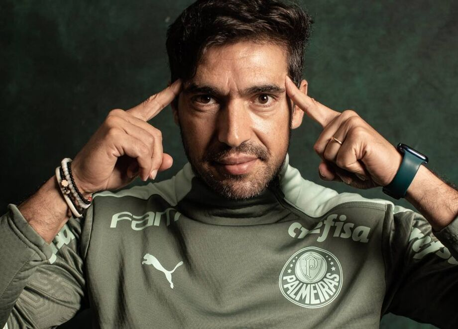

Conteúdo
História do Clube
- A Sociedade Esportiva Palmeiras foi fundada em 26 de agosto de 1914 como Palestra Italia por imigrantes italianos em São Paulo.
- Em 1942, durante a Segunda Guerra Mundial, o clube mudou seu nome para Palmeiras, em respeito ao contexto político da época.
- O Palmeiras é um dos clubes mais vitoriosos do Brasil, com títulos nacionais e internacionais, e uma das maiores torcidas do país.
- O estádio do clube é o Allianz Parque (antigo Palestra Itália), um dos mais modernos do Brasil.
Títulos
| Competição | Número de Títulos | Anos |
|---|---|---|
| Campeonato Brasileiro | 12 | 1960, 1967, 1967, 1969, 1972, 1973, 1993, 1994, 2016, 2018, 2022, 2023 |
| Copa do Brasil | 4 | 1998, 2012, 2015, 2020 |
| Copa Libertadores | 3 | 1999, 2020, 2021 |
| Supercopa do Brasil | 1 | 2023 |
| Recopa Sul-Americana | 1 | 2022 |
| Campeonato Paulista | 24 | 1920, 1926, 1927, 1932, 1933, 1934, 1936, 1940, 1942, 1944, 1947, 1950, 1959, 1963, 1966, 1972, 1974, 1976, 1993, 1994, 1996, 2008, 2020, 2022, 2023 |
Principais ídolos do time
Abel Ferreira (22/12/1978)
Abel Ferreira é o técnico mais vitorioso da história recente do Palmeiras. O treinador português chegou ao clube em 2020 e conquistou títulos importantes, como duas Copas Libertadores (2020 e 2021), Copa do Brasil (2020), Campeonato Brasileiro (2022 e 2023), Recopa Sul-Americana (2022) e Supercopa do Brasil (2023). Abel é reconhecido por sua liderança, inteligência tática e forte identificação com a torcida.
Marcos (04/08/1973)
Marcos Roberto Silveira Reis, conhecido como "São Marcos", é um dos maiores ídolos da história do Palmeiras. Goleiro titular na conquista da Libertadores de 1999, ficou marcado por defesas milagrosas, lealdade ao clube e identificação com a torcida. Atuou no Palmeiras de 1992 a 2012, sendo símbolo de raça e dedicação.

Ademir da Guia (03/04/1942)
Ademir da Guia, o "Divino", é considerado o maior jogador da história do Palmeiras. Meio-campista elegante e técnico, defendeu o clube de 1961 a 1977, conquistando diversos títulos e tornando-se o atleta que mais vestiu a camisa alviverde. É referência de talento, respeito e amor ao clube.